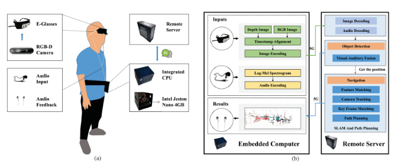

Binglu Wang
王秉路
- E-mail:wbl921129@gmail.com
About Me
February 2025 - present
- Professor, School of Astronautics, Northwestern Polytechnical University
March 2025 - present
- External Mentor, College of Information and Control Engineering, Xi'an University of Architecture and Technology
February 2022 - February 2025
- Postdoctoral, Beijing Institute of Technology (BIT), Collaborating mentors: Erke Mao, Teng Long
2017 - 2021
- Ph.D student, School of Automation, Northwestern Polytechnical University (NWPU)
Reaserch Interests
Autopilot, Signal Processing, Computer Vision
- At present, we mainly use the camera-lidar fusion method for depth completion, object detection, semantic segmentation, tracking and online cross-sensor calibration, and design the fusion of multiple modalities according to different vision tasks. Optimize the processing of different modal signals collected by different sensors such as cameras and lidars. Aiming at how to model vehicle-road collaboration in the same coordinate system, how to realize the signals collected by multiple sensors at the vehicle end and road end to work in 4D space and other directions.
Remote sensing image processing
- At present, in the field of remote sensing image processing, we mainly adopt advanced algorithms and multi-source data collaboration for pre-processing, feature mining, and intelligent interpretation, and design targeted technical solutions according to different application demands. Optimize the processing of remote sensing data from diverse sensors such as optical, radar, and thermal infrared. Aiming at how to achieve high-precision change detection in complex scenes, how to realize efficient fusion of multi-modal remote sensing data for refined ground object extraction, and other directions.
Medical Image Processing
- At present, we mainly focus on applying image processing technologies to analyze and interpret medical imaging data for improved diagnosis and treatment planning. Our research develops advanced algorithms and multimodal integration strategies for key clinical tasks, including disease classification, detection, and lesion segmentation. We explore a range of modeling approaches—from specialized models to generalizable frameworks such as foundation models, as well as lightweight architectures for real-world deployment—prioritizing model interpretability, clinical workflow efficiency, reduced resource use, and practical clinical value. Ultimately, our work aims to bridge technical innovation with tangible improvements in diagnostic accuracy, therapeutic decision-making, and healthcare efficiency.
Main Publication
GasUpper: Gas-Aware Upsampling for Enhanced Gas Segmentation
CAAI Artificial Intelligence Research 4, 2025
@article{lu2025gasupper,
title={GasUpper: Gas-Aware Upsampling for Enhanced Gas Segmentation},
author={Lu, Yuting and Wang, Xiaoyu and Cui, Jingyi and Yang, Le and Wang, Shunzhou and Zhao, Yongqiang and Wang, Binglu},
journal={CAAI Artificial Intelligence Research},
volume={4},
year={2025},
year={2025},
publisher={清华大学出版社}
}
Radiologist-inspired Symmetric Local-Global Multi-Supervised Learning for early diagnosis of pneumoconiosis
Expert Systems with Applications, 127173, 2025
@article{wang2025radiologist,
title={Radiologist-inspired Symmetric Local--Global Multi-Supervised Learning for early diagnosis of pneumoconiosis},
author={Wang, Jiarui and Song, Meiyue and Fan, Deng-Ping and Wang, Xiaoxu and Zhang, Shaoting and Yang, Juntao and Liu, Jiangfeng and Wang, Chen and Wang, Binglu},
journal={Expert Systems with Applications},
volume={276},
pages={127173},
year={2025},
publisher={Elsevier}
}
CM-YOLO: Context Modulated Representation Learning for Ship Detection
IEEE Transactions on Geoscience and Remote Sensing, 2025
@article{min2025cm,
title={CM-YOLO: Context modulated representation learning for ship detection},
author={Min, Lingtong and Dou, Feiyang and Zhang, Yani and Shao, Dian and Li, Li and Wang, Binglu},
journal={IEEE Transactions on Geoscience and Remote Sensing},
year={2025},publisher={IEEE}
}
Multimodal Large Models Are Effective Action Anticipators
IEEE Transactions on Multimedia, 2025
@article{wang2025multimodal,
title={Multimodal Large Models Are Effective Action Anticipators},
author={Wang, Binglu and Tian, Yao and Wang, Shunzhou and Yang, Le},
journal={IEEE Transactions on Multimedia},
year={2025},publisher={IEEE}
}
Boosting Gaze Object Prediction via Pixel-level Supervision from Vision Foundation Model
European Conference on Computer Vision, 369–386, 2025
@inproceedings{jin2024boosting,
title={Boosting gaze object prediction via pixel-level supervision from vision foundation model},
author={Jin, Yang and Zhang, Lei and Yan, Shi and Fan, Bin and Wang, Binglu},
booktitle={European Conference on Computer Vision},
pages={369--386},
year={2024},
organization={Springer}
}

Federated Feature Augmentation and Alignment
IEEE Transactions on Pattern Analysis and Machine Intelligence, 2024
@article{zhou2024federated,
title={Federated feature augmentation and alignment},
author={Zhou, Tianfei and Yuan, Ye and Wang, Binglu and Konukoglu, Ender},
journal={IEEE Transactions on Pattern Analysis and Machine Intelligence},
year={2024},
publisher={IEEE}
}
Collaborative Multimodal Fusion Network for Multiagent Perception
IEEE Transactions on Cybernetics, 2024
@article{zhang2024collaborative,
title={Collaborative multimodal fusion network for multiagent perception},
author={Zhang, Lei and Wang, Binglu and Zhao, Yongqiang and Yuan, Yuan and Zhou, Tianfei and Li, Zhijun},
journal={IEEE Transactions on Cybernetics},
year={2024},
publisher={IEEE}
}
LLMAction: Adapting Large Language Model for Long-Term Action Anticipation
Chinese Conference on Pattern Recognition and Computer Vision (PRCV), 2024
@inproceedings{wang2024llmaction,
title={Llmaction: Adapting large language model for long-term action anticipation},
author={Wang, Binglu and Tian, Yao and Wang, Changhe and Yang, Le},
booktitle={Chinese Conference on Pattern Recognition and Computer Vision (PRCV)},
pages={269--283},
year={2024},
organization={Springer}
}
Chareption: Change-Aware Adaption Empowers Large Language Model for Effective Remote Sensing Image Change Captioning
Chinese Conference on Pattern Recognition and Computer Vision (PRCV), 2024
@inproceedings{wang2024chareption,
title={Chareption: Change-aware adaption empowers large language model for effective remote sensing image change captioning},
author={Wang, Changhe and He, Ningyu and Wang, Binglu},
booktitle={Chinese Conference on Pattern Recognition and Computer Vision (PRCV)},
pages={342--355},
year={2024},
organization={Springer}
}
Content and Relation Fuzzy Mitigation Framework for Intent Perception
IEEE Transactions on Fuzzy Systems, 2024
@article{zhang2024content,
title={Content and Relation Fuzzy Mitigation Framework for Intent Perception},
author={Zhang, Wenxin and Qi, Hao and Wang, Shutong and Lin, Ziqi and Wang, Binglu},
journal={IEEE Transactions on Fuzzy Systems},
year={2024},
publisher={IEEE}
}
Enhanced Window-Based Self-Attention with Global and Multi-Scale Representations for Remote Sensing Image Super-Resolution
Remote Sensing 2024
@article{lu2024enhanced,
title={Enhanced window-based self-attention with global and multi-scale representations for remote sensing image super-resolution},
author={Lu, Yuting and Wang, Shunzhou and Wang, Binglu and Zhang, Xin and Wang, Xiaoxu and Zhao, Yongqiang},
journal={Remote Sensing},
volume={16},
number={15},
pages={2837},
year={2024},
publisher={MDPI}
}
Two-stage Spatial-Frequency Joint Learning for Large-Factor Remote Sensing Image Super-Resolution
IEEE Transactions on Geoscience and Remote Sensing, 2024
@article{wang2024two,
title={Two-stage Spatial-Frequency Joint Learning for Large-Factor Remote Sensing Image Super-Resolution},
author={Wang, Jiarui and Lu, Yuting and Wang, Shunzhou and Wang, Binglu and Wang, Xiaoxu and Long, Teng},
journal={IEEE Transactions on Geoscience and Remote Sensing},
year={2024},
publisher={IEEE}
}
PneumoLLM: Harnessing the Power of Large Language Model for Pneumoconiosis Diagnosis
Medical Image Analysis
@article{song2024pneumollm,
title={PneumoLLM: Harnessing the power of large language model for pneumoconiosis diagnosis},
author={Song, Meiyue and Wang, Jiarui and Yu, Zhihua and Wang, Jiaxin and Yang, Le and Lu, Yuting and Li, Baicun and Wang, Xue and Wang, Xiaoxu and Huang, Qinghua and others},
journal={Medical Image Analysis},
pages={103248},
year={2024},
publisher={Elsevier}
},
year={2023}
}
TransGOP: Transformer-Based Gaze Object Prediction
Proceedings of the AAAI Conference on Artificial Intelligence, 2024
@article{wang2024transgop,
title={TransGOP: Transformer-Based Gaze Object Prediction},
author={Wang, Binglu and Guo, Chenxi and Jin, Yang and Xia, Haisheng and Liu, Nian},
journal={arXiv preprint arXiv:2402.13578},
year={2024}
}
Temporal Action Localization in the Deep Learning Era: A Survey
IEEE Transactions on Pattern Analysis and Machine Intelligence, 2023
@article{wang2023temporal,
title={Temporal action localization in the deep learning era: A survey},
author={Wang, Binglu and Zhao, Yongqiang and Yang, Le and Long, Teng and Li, Xuelong},
journal={IEEE Transactions on Pattern Analysis and Machine Intelligence},
year={2023},
publisher={IEEE}
}
Joint Denoising-Demosaicking Network for Long-Wave Infrared Division-of-Focal-Plane Polarization
Images with Mixed Noise Level Estimation
IEEE Transactions on Image Processing, 2023
@article{li2023joint,
title={Joint Denoising-Demosaicking Network for Long-Wave Infrared Division-of-Focal-Plane Polarization Images With Mixed Noise Level Estimation},
author={Li, Ning and Wang, Binglu and Goudail, Fran{\c{c}}ois and Zhao, Yongqiang and Pan, Quan},
journal={IEEE Transactions on Image Processing},
year={2023},
publisher={IEEE}
}

Core: Cooperative reconstruction for multi-agent perception
IEEE/CVF International Conference on Computer Vision 2023
@inproceedings{wang2023core,
title={Core: Cooperative reconstruction for multi-agent perception},
author={Wang, Binglu and Zhang, Lei and Wang, Zhaozhong and Zhao, Yongqiang and Zhou, Tianfei},
booktitle={Proceedings of the IEEE/CVF International Conference on Computer Vision},
pages={8710--8720},
year={2023}
}
Multi-level Deep Learning Kalman Filter
IEEE International Conference on Advanced Robotics & Mechatronics 2023
@inproceedings{yan2023multi,
title={Multi-level Deep Learning Kalman Filter},
author={Yan, Shi and Liang, Yan and Wang, Binglu},
booktitle={2023 International Conference on Advanced Robotics and Mechatronics (ICARM)},
pages={1113--1118},
year={2023},
organization={IEEE}
}

Densitytoken: Weakly-Supervised Crowd Counting with Density Classification
IEEE International Conference on Acoustics, Speech, and Signal Processing, 2023
@inproceedings{hu2023densitytoken,
title={Densitytoken: Weakly-Supervised Crowd Counting with Density Classification},
author={Hu, Zaiyi and Wang, Binglu and Li, Xuelong},
booktitle={ICASSP 2023-2023 IEEE International Conference on Acoustics, Speech and Signal Processing (ICASSP)},
pages={1--5},
year={2023},
organization={IEEE}
}
Coarse-to-Fine Nutrition Prediction
IEEE Transactions on Multimedia, 2023
@article{wang2023coarse,
title={Coarse-to-Fine Nutrition Prediction},
author={Wang, Binglu and Bu, Tianci and Hu, Zaiyi and Yang, Le and Zhao, Yongqiang and Li, Xuelong},
journal={IEEE Transactions on Multimedia},
year={2023},
publisher={IEEE}
}
Learning Pixel-Adaptive Weights for Portrait Photo Retouching
Pattern Recognition, 2023
@article{wang2023learning,
title={Learning pixel-adaptive weights for portrait photo retouching},
author={Wang, Binglu and Lu, Chengzhe and Yan, Dawei and Zhao, Yongqiang and Li, Ning and Li, Xuelong},
journal={Pattern Recognition},
volume={143},
pages={109775},
year={2023},
publisher={Elsevier}
}
Hybrid Attention-Based U-Shaped Network for Remote Sensing Image Super-Resolution
IEEE Transactions on Geoscience and Remote Sensing, 2023
@article{wang2023hybrid,
title={Hybrid attention based u-shaped network for remote sensing image super-resolution},
author={Wang, Jiarui and Wang, Binglu and Wang, Xiaoxu and Zhao, Yongqiang and Long, Teng},
journal={IEEE Transactions on Geoscience and Remote Sensing},
year={2023},
publisher={IEEE}
}

Cross-Spatial Pixel Integration and Cross-Stage Feature Fusion Based Transformer Network for Remote
Sensing Image Super-Resolution
IEEE Transactions on Geoscience and Remote Sensing, 2023
@article{lu2023cross,
title={Cross-Spatial Pixel Integration and Cross-Stage Feature Fusion-Based Transformer Network for Remote Sensing Image Super-Resolution},
author={Lu, Yuting and Min, Lingtong and Wang, Binglu and Zheng, Le and Wang, Xiaoxu and Zhao, Yongqiang and Yang, Le and Long, Teng},
journal={IEEE Transactions on Geoscience and Remote Sensing},
volume={61},
pages={1--16},
year={2023},
publisher={IEEE}
}

Prototype-based Intent Perception
IEEE Transactions on Multimedia, 2023
@article{wang2023prototype,
title={Prototype-based intent perception},
author={Wang, Binglu and Yang, Kang and Zhao, Yongqiang and Long, Teng and Li, Xuelong},
journal={IEEE Transactions on Multimedia},
year={2023},
publisher={IEEE}
}

LCH: fast RGB-D salient object detection on CPU via lightweight convolutional network with hybrid
knowledge distillation
Visual Computer, 2023
@article{wang2023lch,
title={LCH: fast RGB-D salient object detection on CPU via lightweight convolutional network with hybrid knowledge distillation},
author={Wang, Binglu and Zhang, Fan and Zhao, Yongqiang},
journal={The Visual Computer},
pages={1--18},
year={2023},
publisher={Springer}
}
GaTector: A Unified Framework for Gaze Object Prediction
IEEE Conference on Computer Vision and Pattern Recognition, 2022
@inproceedings{wang2022gatector,
title={Gatector: A unified framework for gaze object prediction},
author={Wang, Binglu and Hu, Tao and Li, Baoshan and Chen, Xiaojuan and Zhang, Zhijie},
booktitle={Proceedings of the IEEE/CVF Conference on Computer Vision and Pattern Recognition},
pages={19588--19597},
year={2022}
}

Exploring Sub-Action Granularity for Weakly Supervised Temporal Action Localization
IEEE Transactions on Circuits and Systems for Video Technology, 2021
@article{wang2021exploring,
title={Exploring sub-action granularity for weakly supervised temporal action localization},
author={Wang, Binglu and Zhang, Xun and Zhao, Yongqiang},
journal={IEEE Transactions on Circuits and Systems for Video Technology},
volume={32},
number={4},
pages={2186--2198},
year={2021},
publisher={IEEE}
}

Multiple Instance Graph Learning for Weakly Supervised Remote Sensing Object Detection
IEEE Transactions on Geoscience and Remote Sensing, 2021
@article{wang2021multiple,
title={Multiple instance graph learning for weakly supervised remote sensing object detection},
author={Wang, Binglu and Zhao, Yongqiang and Li, Xuelong},
journal={IEEE Transactions on Geoscience and Remote Sensing},
volume={60},
pages={1--12},
year={2021},
publisher={IEEE}
}

POLO: Learning Explicit Cross-Modality Fusion for Temporal Action Localization
IEEE Signal Processing Letters, 2021
@article{wang2021polo,
title={Polo: Learning explicit cross-modality fusion for temporal action localization},
author={Wang, Binglu and Yang, Le and Zhao, Yongqiang},
journal={IEEE Signal Processing Letters},
volume={28},
pages={503--507},
year={2021},
publisher={IEEE}
}

PFWNet: Pretraining neural network via feature jigsaw puzzle for weakly-supervised temporal action localization
Neurocomputing, 2021
@article{wang2021pfwnet,
title={PFWNet: Pretraining neural network via feature jigsaw puzzle for weakly-supervised temporal action localization},
author={Wang, Binglu and Zhao, Yongqiang and Zhang, Yani},
journal={Neurocomputing},
volume={443},
pages={162--173},
year={2021},
publisher={Elsevier}
}
I2net: Mining intra-video and inter-video attention for temporal action localization
Neurocomputing, 2021
@article{zhang2021i2net,
title={I2net: Mining intra-video and inter-video attention for temporal action localization},
author={Zhang, Wei and Wang, Binglu and Ma, Songhui and Zhang, Yani and Zhao, Yongqiang},
journal={Neurocomputing},
volume={444},
pages={16--29},
year={2021},
publisher={Elsevier}
}
Other Publication
Contextual and orientation correction modules enhance weakly-supervised aerial object detection in remote sensing images
Engineering Applications of Artificial Intelligence 161, 112110, 2025
@article{yang2025contextual,
title={Contextual and orientation correction modules enhance weakly-supervised aerial object detection in remote sensing images},
author={Yang, Le and Wang, Shunzhou and Wang, Xuerong and Wang, Shutong and Lu, Yuting and Wang, Binglu},
journal={Engineering Applications of Artificial Intelligence},
volume={161},
pages={112110},
year={2025},
publisher={Elsevier}
}
Belief-based Fuzzy and Imprecise Clustering for Arbitrary Data Distributions
IEEE Transactions on Fuzzy Systems, 2025
@article{zhang2025belief,
title={Belief-based fuzzy and imprecise clustering for arbitrary data distributions},
author={Zhang, Zuo-wei and Liu, Zhun-ga and Ning, Liang-bo and Tian, Hong-peng and Wang, Bing-lu},
journal={IEEE Transactions on Fuzzy Systems},
year={2025},
publisher={IEEE}
}
A Robust Kernel‐Based Global Identification Method for Hammerstein Parameters Varying System With Non‐Gaussian Output Noises
International Journal of Robust and Nonlinear Control, 2025
@article{ma2025robust,
title={A Robust Kernel-Based Global Identification Method for Hammerstein Parameters Varying System With Non-Gaussian Output Noises},
author={Ma, Zhengya and Zhao, Xidong and Wang, Xiaoxu and Zheng, Le and Chao, Yiwei and Wang, Binglu and Gong, Zhenyu and Yang, Min},
journal={International Journal of Robust and Nonlinear Control},
year={2025},
publisher={Wiley Online Library}
}
FinePhys: Fine-grained Human Action Generation by Explicitly Incorporating Physical Laws for Effective Skeletal Guidance
Proceedings of the Computer Vision and Pattern Recognition Conference, 1905-1916, 2025
@inproceedings{shao2025finephys,
title={FinePhys: Fine-grained Human Action Generation by Explicitly Incorporating Physical Laws for Effective Skeletal Guidance},
author={Shao, Dian and Shi, Mingfei and Xu, Shengda and Chen, Haodong and Huang, Yongle and Wang, Binglu},
booktitle={Proceedings of the Computer Vision and Pattern Recognition Conference},
pages={1905--1916},
year={2025}
}
Adaptive Fusion Learning for Compositional Zero-Shot Recognition
IEEE Transactions on Multimedia, 2024
@article{min2024adaptive,
title={Adaptive fusion learning for compositional zero-shot recognition},
author={Min, Lingtong and Fan, Ziman and Wang, Shunzhou and Dou, Feiyang and Li, Xin and Wang, Binglu},
journal={IEEE Transactions on Multimedia},
year={2024},
publisher={IEEE}
}
Perspective on Wearable Systems for Human Underwater Perceptual Enhancement
IEEE Transactions on Cybernetics, 2024
@article{xia2024perspective,
title={Perspective on Wearable Systems for Human Underwater Perceptual Enhancement},
author={Xia, Haisheng and Liao, Fei and Bao, Binglei and Chen, Jintao and Wang, Binglu and Huang, Qinghua and Li, Zhijun},
journal={IEEE Transactions on Cybernetics},
year={2024},
publisher={IEEE}
}

Memory-biomimetic deep Bayesian filtering
Information Fusion 112, 102580, 2024
@article{yan2024memory,
title={Memory-biomimetic deep Bayesian filtering},
author={Yan, Shi and Liang, Yan and Zheng, Le and Fan, Mingyang and Wang, Binglu},
journal={Information Fusion},
volume={112},
pages={102580},
year={2024},
publisher={Elsevier}
}
Scale-aware Backprojection Transformer for Single Remote Sensing Image Super-Resolution
IEEE Transactions on Geoscience and Remote Sensing, 2024
@article{hao2024scale,
title={Scale-aware backprojection transformer for single remote sensing image super-resolution},
author={Hao, Jinglei and Li, Wukai and Lu, Yuting and Jin, Yang and Zhao, Yongqiang and Wang, Shunzhou and Wang, Binglu},
journal={IEEE Transactions on Geoscience and Remote Sensing},
year={2024},
publisher={IEEE}
}
Local Identification of Hammerstein Parameter Varying Systems with Asymmetric Noise Characteristics
China Automation Congress (CAC), 2024
@inproceedings{zhengya2024local,
title={Local Identification of Hammerstein Parameter Varying Systems with Asymmetric Noise Characteristics},
author={Zhengya, Ma and Yiwei, Chao and Kangbo, Liu and Xiaoxu, Wang and Binglu, Wang},
booktitle={2024 China Automation Congress (CAC)},
pages={5152--5157},
year={2024},
organization={IEEE}
}
A Patch-Based Method for Underwater Image Enhancement With Denoising Diffusion Models
IEEE Transactions on Cybernetics, 2024
@article{xia2024patch,
title={A patch-based method for underwater image enhancement with denoising diffusion models},
author={Xia, Haisheng and Bao, Binglei and Liao, Fei and Chen, Jintao and Wang, Binglu and Li, Zhijun},
journal={IEEE Transactions on Cybernetics},
year={2024},
publisher={IEEE}
}
Federated Cross-Incremental Self-Supervised Learning for Medical Image Segmentation
IEEE Transactions on Neural Networks and Learning Systems, 2024
@article{zhang2024federated,
title={Federated cross-incremental self-supervised learning for medical image segmentation},
author={Zhang, Fan and Liu, Huiying and Cai, Qing and Feng, Chun-Mei and Wang, Binglu and Wang, Shanshan and Dong, Junyu and Zhang, David},
journal={IEEE Transactions on Neural Networks and Learning Systems},
year={2024},
publisher={IEEE}
}
Vision-based Wearable Steering Assistance for People with Impaired Vision in Jogging
ICRA, 2024
@inproceedings{liu2024vision,
title={Vision-based wearable steering assistance for people with impaired vision in jogging},
author={Liu, Xiaotong and Wang, Binglu and Li, Zhijun},
booktitle={2024 IEEE International Conference on Robotics and Automation (ICRA)},
pages={15270--15275},
year={2024},
organization={IEEE}
}

Multi-Sensory Visual-Auditory Fusion of Wearable Navigation Assistance for People With Impaired Vision
IEEE Transactions on Automation Science and Engineering, 2024
@article{song2023multi,
title={Multi-Sensory Visual-Auditory Fusion of Wearable Navigation Assistance for People With Impaired Vision},
author={Song, Yang and Li, Zhijun and Li, Guoxin and Wang, Binglu and Zhu, Min and Shi, Peng},
journal={IEEE Transactions on Automation Science and Engineering},
year={2023},
publisher={IEEE}
}
U2PNet: An Unsupervised Underwater Image-Restoration Network Using Polarization
IEEE Transactions on Cybernetics, 2024
@article{shen2024u,
title={U 2 PNet: An Unsupervised Underwater Image-Restoration Network Using Polarization},
author={Shen, Linghao and Xia, Haisheng and Zhang, Xun and Zhao, Yongqiang and Li, Ning and Kong, Seong G and Wang, Binglu and Li, Zhijun},
journal={IEEE Transactions on Cybernetics},
year={2024},
publisher={IEEE}
}
Differential feature awareness network within antagonistic learning for infrared-visible object detection
IEEE Transactions on Circuits and Systems for Video Technology, 2023
@article{zhang2023differential,
title={Differential feature awareness network within antagonistic learning for infrared-visible object detection},
author={Zhang, Ruiheng and Li, Lu and Zhang, Qi and Zhang, Jin and Xu, Lixin and Zhang, Baomin and Wang, Binglu},
journal={IEEE Transactions on Circuits and Systems for Video Technology},
year={2023},
publisher={IEEE}
}

Enhanced dynamic feature representation learning framework by Fourier transform for domain generalization
Information Sciences, 2023
@article{wang2023enhanced,
title={Enhanced dynamic feature representation learning framework by fourier transform for domain generalization},
author={Wang, Xin and Zhao, Qingjie and Zhang, Changchun and Wang, Binglu and Wang, Lei and Liu, Wangwang},
journal={Information Sciences},
volume={649},
pages={119624},
year={2023},
publisher={Elsevier}
}
Multi-level Gated Bayesian Recurrent Neural Network for State Estimation
arXiv preprint arXiv:2310.17187
@article{yan2023multi,
title={Multi-level Gated Bayesian Recurrent Neural Network for State Estimation},
author={Yan, Shi and Liang, Yan and Zheng, Le and Fan, Mingyang and Wang, Binglu and Wang, Xiaoxu},
journal={arXiv preprint arXiv:2310.17187},
year={2023}
}

DSLSM: Dual-kernel-induced statistic level set model for image segmentation
Expert Systems with Applications, 2023
@article{zhang2024dslsm,
title={DSLSM: Dual-kernel-induced statistic level set model for image segmentation},
author={Zhang, Fan and Liu, Huiying and Duan, Xiaojun and Wang, Binglu and Cai, Qing and Li, Huafeng and Dong, Junyu and Zhang, David},
journal={Expert Systems with Applications},
volume={242},
pages={122772},
year={2024},
publisher={Elsevier}
}
A Dual-Attention Deep Discriminative Domain Generalization Model for Hyperspectral Image Classification
Remote Sensing, 2023
@article{zhao2023dual,
title={A Dual-Attention Deep Discriminative Domain Generalization Model for Hyperspectral Image Classification},
author={Zhao, Qingjie and Wang, Xin and Wang, Binglu and Wang, Lei and Liu, Wangwang and Li, Shanshan},
journal={Remote Sensing},
volume={15},
number={23},
pages={5492},
year={2023},
publisher={MDPI}
}
Forward modeling and inverse estimation for nonlinear filtering
International Journal of Robust and Nonlinear Control, 2023
@article{cui2023forward,
title={Forward modeling and inverse estimation for nonlinear filtering},
author={Cui, Haoran and Zhang, Long and Wang, Xiaoxu and Liu, Mingyong and Wang, Binglu},
journal={International Journal of Robust and Nonlinear Control},
volume={33},
number={10},
pages={5734--5757},
year={2023},
publisher={Wiley Online Library}
}
YOLO-DCTI: Small Object Detection in Remote Sensing Base on Contextual Transformer Enhancement
Remote Sensing, 2023
@article{min2023yolo,
title={YOLO-DCTI: small object detection in remote sensing base on contextual transformer enhancement},
author={Min, Lingtong and Fan, Ziman and Lv, Qinyi and Reda, Mohamed and Shen, Linghao and Wang, Binglu},
journal={Remote Sensing},
volume={15},
number={16},
pages={3970},
year={2023},
publisher={MDPI}
}
SODA: Weakly supervised temporal action localization based on astute background response and self-distillation learning
International Journal of Computer Vision, 2021
@article{zhao2021soda,
title={SODA: Weakly supervised temporal action localization based on astute background response and self-distillation learning},
author={Zhao, Tao and Han, Junwei and Yang, Le and Wang, Binglu and Zhang, Dingwen},
journal={International Journal of Computer Vision},
volume={129},
number={8},
pages={2474--2498},
year={2021},
publisher={Springer}
}
LF-MAGNet: Learning Mutual Attention Guidance of Sub-Aperture Images for Light Field Image Super-Resolution
Chinese Conference on Pattern Recognition and Computer Vision (PRCV), 2021
@inproceedings{wang2021lf,
title={LF-MAGNet: Learning Mutual Attention Guidance of Sub-Aperture Images for Light Field Image Super-Resolution},
author={Wang, Zijian and Lu, Yao and Zhang, Yani and Lu, Haowei and Wang, Shunzhou and Wang, Binglu},
pages={105--116},
year={2021},
organization={Springer}
}
Social Work
- 国际期刊 Robotic Intelligence and Automation (RIA) 编委
- 陕西省图形图像学学会理事
- IEEE ARM 2023（自动化学会 A 类会议）领域主席
- 中国指控学会（陕西）青年科学家俱乐部 轮值主席
- IEEE TPAMI/IEEE TCYB/IEEE TIE/CVPR 等 10+国际顶级期刊和重要会议的审稿人
- 第二届北京理工大学博士后联谊会理事长/第三十四届北京博士后联谊会理事
Teaching Achievements
- 清华AIR-百度Apollo车路协同自动驾驶算法挑战赛 优胜奖
- 西工大教育实验学院大学生创新创业重点支持领域项目（全院唯一）
Awards
- 陕西省高等学校科学技术一等奖(排名2/6)
- 中国指挥与控制学会技术发明二等奖(排名 2/6)
- 中国产学研学会合作创新与促进优秀奖(排名 4/10)
- 陕西省科技工作者创新创业大赛一等奖(排名 3/8)
- 陕西省科技工作者创新创业大赛三等奖(排名 3/10)
- 陕西省高等学校科学技术一等奖(排名 2/6)
- 西北工业大学优秀毕业生